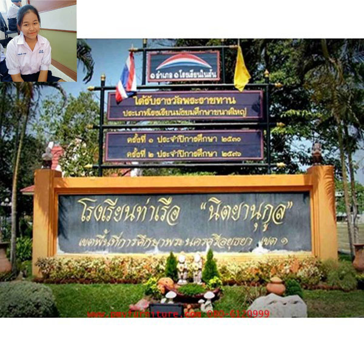

แนะนำโรงเรียน
อาคาร 1เป็นอาคารของหมวดศิลปะ ในอาคารนี้มีห้องเรียนต่างๆมากมายเช่นห้องเรียนนาฎศิลป์ จะอยู่ชั้นที่ 2 ของอาคาร ห้องดนตรีไทยจะอยู่ชั้นที่2ของอาคาร ห้องวงปี่พากษ์มอญเเละห้องวงโยธวาทิตย์ จะอยู่ชั้นที่ 1ของอาคารนี้ และห้องศิลปะจะอยู่ชั้นล่างของอาคาร
อาคาร 2 เป็นอาคารของหมวดภาษาไทย และการงานอาชีพซึ่งถ้าได้เดินเข้าอาคารนี้จะได้รับความรู้มากมายชั้นที่1จะเป็นของกลุ่มสาระภาษาไทยจะมีบอร์ดให้ความรู้มากมายเช่นการแต่งกลอนและสำนวนสุภา์ษิตต่างๆมากมาย ในชั้นที่2 จะเป็นการให้ความรู้เกี่ยวกับกลุ่มสาระการงานอาชีพและเทคโนโลยี
อาคาร 4 เป็นอาคารของกลุ่มสาระการเรียนรู้ภาษาต่างประเทศในอาคารนี้มีการศึกษาต่างๆมากมายเกี่ยวกับทางด้านภาษา เช่นภาษาอังกฤษ ภาษาญี่ปุ่น
อาคาร 6 เป็นอาคารที่ให้ความรู้เกี่ยวกับกลุ่มสาระการเรียนรู้วิทยาศาสตร์
ศาลาอนุสาวรีย์หม่อมเจ้านิตยากร วรวรรณ เป็นบุคคลที่สำคัญมากในการก่อตั้ง โรงเรียนท่าเรือ "นิตยานุกูล" ทำให้เป็นที่เคารพของลูกหลานชาวขาวแดงเป็นที่สักการะ เป็นที่ยึดเหนี่ยวจิตใจให้กับนักเรียนชาวขาวแดง